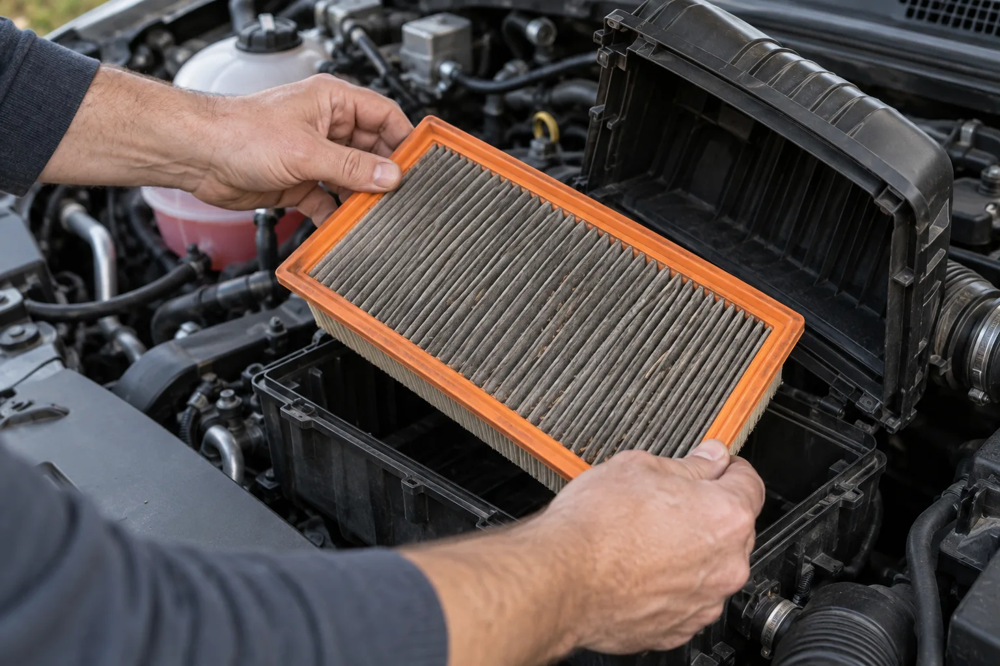
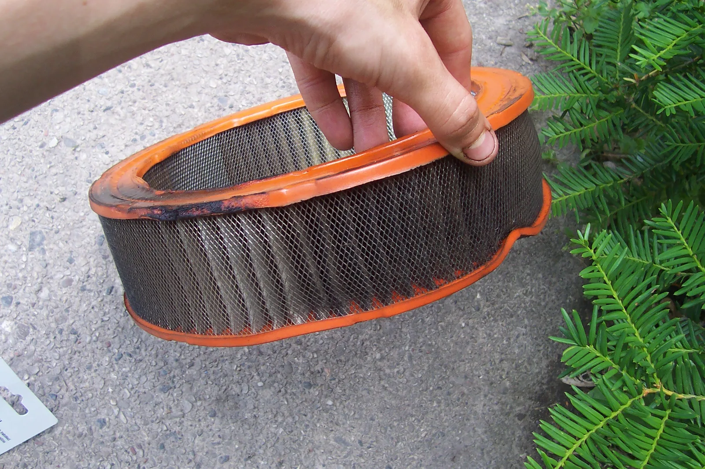
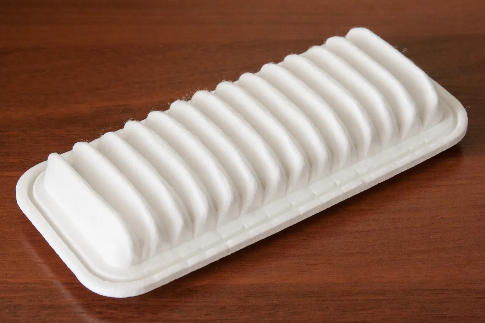
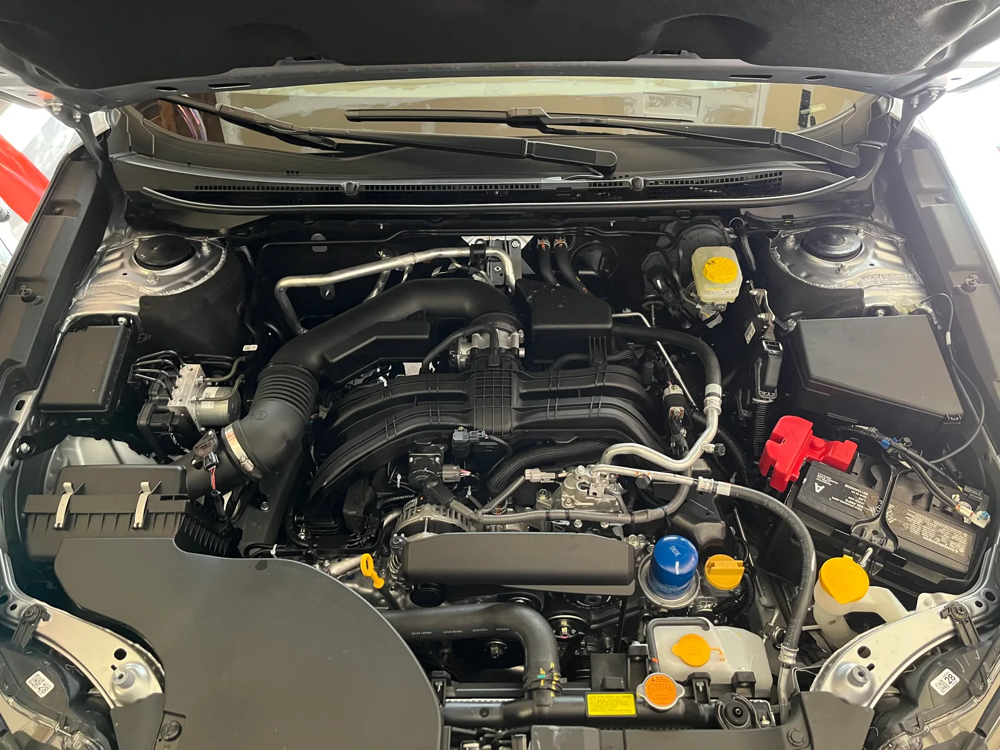
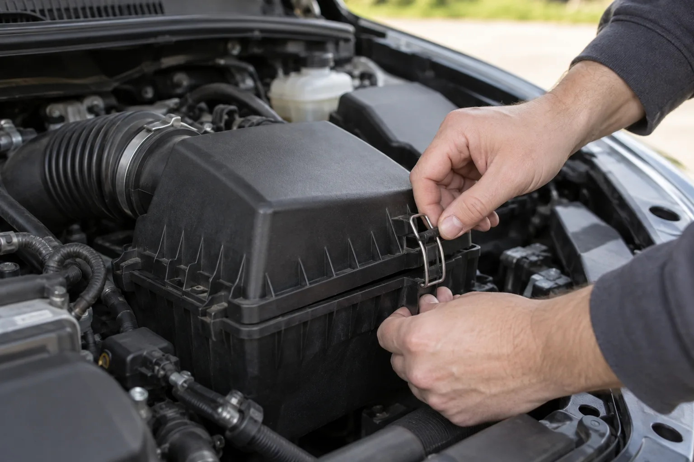
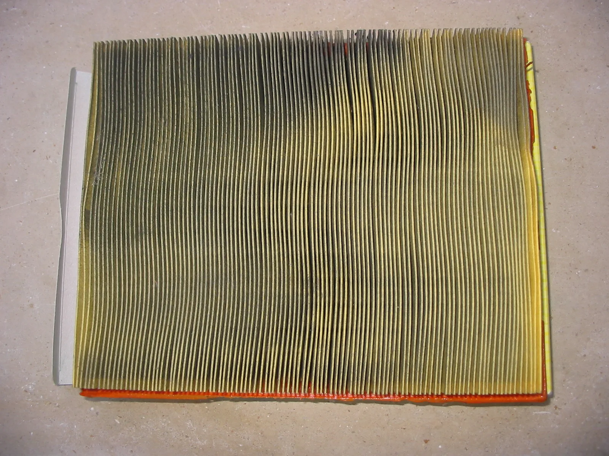
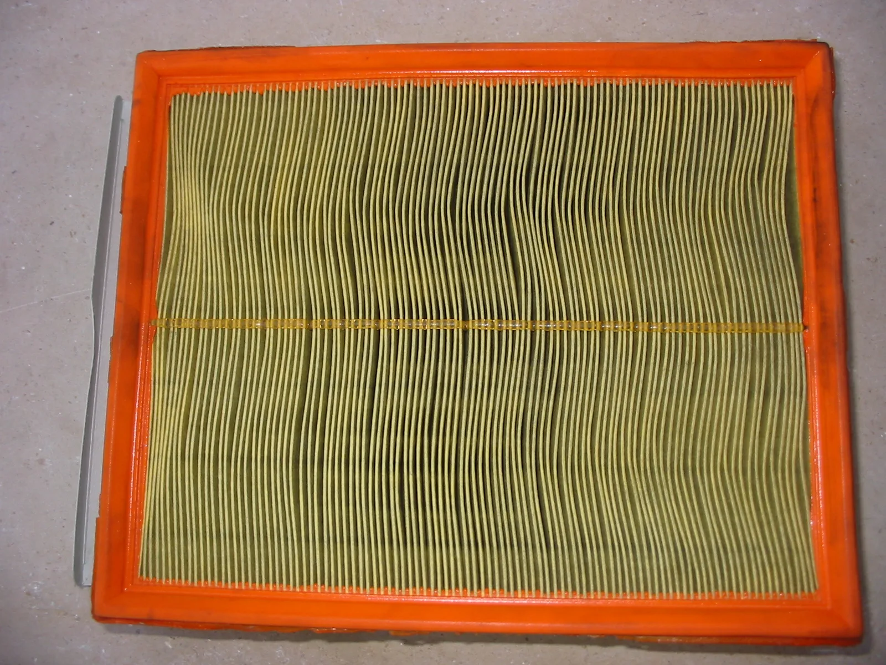
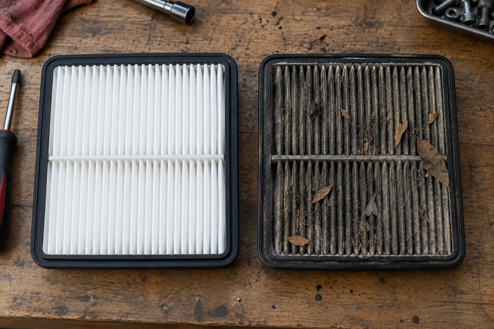
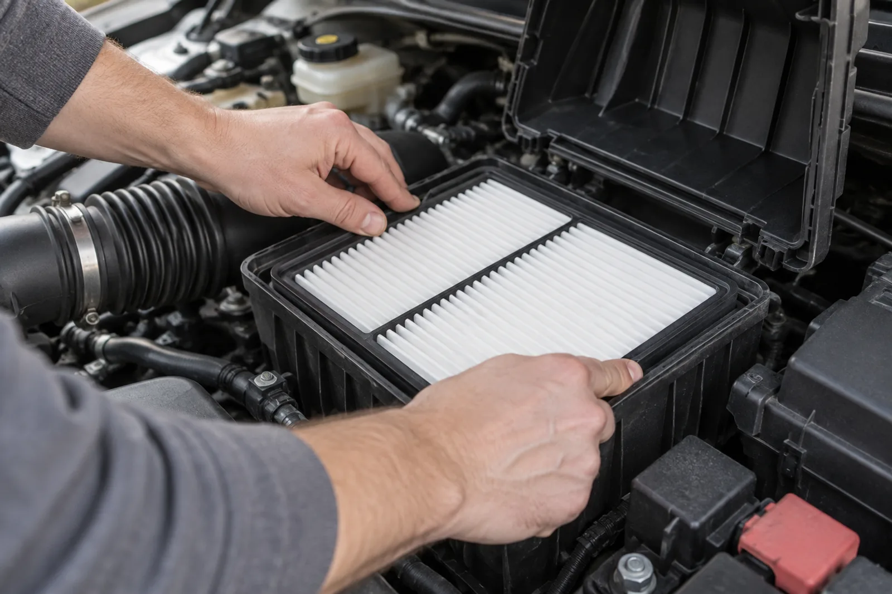
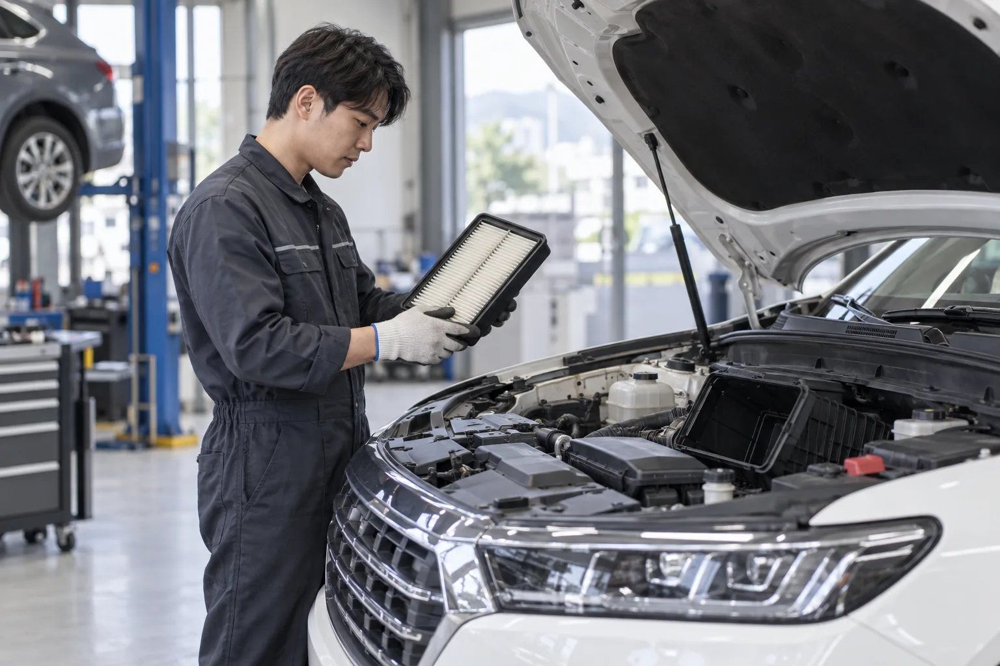

▲ 열어 둔 에어클리너 박스에서 먼지로 회색이 된 엔진 에어필터를 꺼내는 모습 이미지=AI 생성
정비소에서 "에어필터도 가셔야겠네요"라는 말을 들었을 때, 그게 어떤 필터인지부터 헷갈린다면 이 글이 도움이 된다. 자동차에는 이름이 비슷한 필터가 두 개 있다. 하나는 에어컨·히터 바람을 걸러 주는 실내(캐빈) 필터, 다른 하나는 엔진으로 들어가는 공기를 걸러 주는 엔진 에어필터(에어클리너 필터)다. 제조사 매뉴얼도 둘을 '공조 장치용 에어필터'와 '에어클리너 필터'로 따로 적고, 교체 주기도 다르다. 이 글은 엔진 에어필터만 다룬다. 실내 필터는 CarPrism의 실내(캐빈) 에어컨 필터 교체 가이드를 참고하자.
1. 엔진 에어필터가 하는 일, 막히면 생기는 일
엔진은 연료와 함께 엄청난 양의 공기를 들이마신다. 이 공기 속 모래·먼지를 걸러 주는 게 엔진 에어필터다. 현대차 취급설명서는 "소량의 먼지라도 엔진에 계속 흡입되면, 먼지가 연마제 역할을 하여 엔진 수명을 단축시킨다"고 설명한다. 필터에 문제가 생기면 엔진 수명 단축, 매연 과다 발생, 엔진 출력 저하가 일어날 수 있다는 것이다.
그렇다면 막힌 필터가 연비도 떨어뜨릴까. 요즘 차라면 크게 기대하지 않는 게 맞다. 미국 에너지부가 운영하는 fueleconomy.gov는 "컴퓨터로 제어되는 연료분사식 가솔린 엔진이나 디젤 엔진에서 막힌 에어필터를 교체해도 연비는 좋아지지 않지만, 가속 성능은 좋아질 수 있다"고 안내한다. 연비 개선 효과가 있는 건 카뷰레터(기화기)를 쓰던 옛날 차 이야기다.
근거는 미국 오크리지국립연구소(ORNL)가 2009년 발표한 시험이다. 연료분사 차량 3대(2007 뷰익 루선, 2006 닷지 차저, 2003 토요타 캠리)에 필터를 인위적으로 막히게 해 시험했더니 연비에는 의미 있는 차이가 없었다. 엔진 제어 장치가 공기량에 맞춰 연료를 조절하기 때문이다. 다만 가속 성능은 모든 차가 깨끗한 필터에서 더 좋았다. 1972년식 카뷰레터 차량(폰티액 그랜드빌)에서는 보통 수준으로 막힌 필터를 새것으로 바꾸자 연비가 2~6% 나아졌다. 운전이 어려울 만큼 심하게 막힌 필터와 비교하면 개선 폭이 최대 14%까지 나왔다.
📍 "필터만 갈면 연비 10% 오른다"는 말은 걸러 듣자
ORNL 보고서는 기존 문헌에 나오던 10~15% 수준의 연비 저하가 카뷰레터 차량에서도 차가 거의 달리기 힘들 만큼 필터가 심하게 막혔을 때에야 나타났다고 적었다. 엔진 에어필터를 제때 가는 이유는 연비보다 엔진 보호와 출력 유지다. 참고로 이 연구는 가솔린 차량만 시험했다. 연구진은 스로틀(흡기 조절 밸브) 없이 늘 많은 공기를 빨아들이는 디젤 엔진은 막힌 필터가 연비에 측정 가능한 영향을 줄 수도 있다며 후속 연구 과제로 남겨 두었다. 다만 fueleconomy.gov의 현재 안내는 디젤 엔진도 막힌 필터를 갈아서 연비가 좋아지지는 않는다고 적고 있다.

▲ 권장 교체 시점을 약 5만 마일 넘겨 사용한 것으로 소개된 원형 에어필터. 옛 카뷰레터 엔진에 주로 쓰이던 형태다 ⓒ Ahanix1989 / Wikimedia Commons (Public domain)
2. 언제 갈아야 하나 — 제조사 매뉴얼 주기
교체 시기는 인터넷 속설보다 내 차 매뉴얼이 정답이다. 이번에 공식 자료로 확인한 주기는 아래와 같다. 차종·엔진·판매 지역에 따라 다를 수 있으니, 내 차 주기는 취급설명서의 '정기 점검' 항목에서 한 번 더 확인하자.
| 제조사(확인 차종) | 통상 조건 | 가혹 조건 |
|---|---|---|
| 현대 2025 투싼 (가솔린·디젤) | 1만km마다 점검, 4만km마다 교체 | 상태에 따라 수시 점검, 필요시 교체 (모래·먼지 많은 지역, 잦은 험로 주행) |
| 현대 2026 쏘나타·그랜저 | 1만km마다 점검, 4만km마다 교체 | 상태에 따라 수시 점검, 필요시 교체 (모래·먼지 많은 지역, 잦은 험로 주행) |
| 제네시스 2026 G80 | 1만km마다 점검, 4만km마다 교체 | 상태에 따라 수시 점검, 필요시 교체 (모래·먼지 많은 지역, 잦은 험로 주행) |
| 기아 2026 타스만 | 1만km마다 점검, 4만km마다 교체 | 상태에 따라 수시 점검, 필요시 교체 (모래·먼지 많은 지역, 모랫길·자갈길·눈길·비포장도로 잦은 주행) |
| 토요타 2025 코롤라 (미국 보증·정비 가이드) | 3만 마일(약 4만8,000km)마다 교체 | 흙길·먼지 많은 길을 주로 달리면 5,000마일(약 8,000km)마다 점검 |
이번에 확인한 현대·제네시스·기아 매뉴얼은 차급과 관계없이 1만km 점검·4만km 교체로 같았다. 투싼 매뉴얼은 가솔린과 디젤 정기 점검표를 따로 두지만 에어클리너 필터 주기는 두 표 모두 같다. 그래서 디젤차라고 필터 주기를 따로 외울 필요는 없고, 내 차 매뉴얼 표만 확인하면 된다.
현대차 취급설명서는 "비포장도로나 먼지가 많은 곳에서 주행하면 먼지가 더 많이 흡입되므로 더 자주 점검 및 교체해야 한다"고 적고 있다. 공사 현장 주변을 자주 오가거나, 황사·꽃가루가 심한 계절을 지났다면 주행거리가 덜 찼어도 한 번 열어 보는 게 좋다. 반대로 주행거리가 짧아도 오래 방치한 필터는 상태를 확인하자.

▲ 토요타 1KR-FE 엔진용 새 에어필터. 요즘 승용차는 대부분 이런 납작한 패널형을 쓴다 ⓒ Ilya Plekhanov / Wikimedia Commons (CC BY-SA 3.0)
3. 직접 확인·교체하는 법 — 10분이면 된다
엔진 에어필터는 운전자가 직접 확인하기 가장 쉬운 소모품 중 하나다. 대부분 공구 없이 클립만 풀면 열린다. 아래는 현대차 취급설명서의 교체 절차(스마트스트림 G2.0·G1.6 T-GDi 등)를 바탕으로 정리한 순서다. 에어클리너 박스 모양과 고정 방식(클립·레버·나사)은 차종마다 다르니 내 차 매뉴얼 그림을 함께 보자.

▲ 2023년식 스바루 아웃백(2.5 가솔린)의 엔진룸. 왼쪽 아래 금속 클립 두 개가 달린 검은 상자가 에어클리너 박스이고, 여기서 나온 굵은 주름 호스가 엔진으로 공기를 보낸다 ⓒ Colin Venable / Wikimedia Commons (CC0)
- 시동을 끄고 엔진이 식은 뒤 보닛을 연다. 엔진룸 한쪽에 굵은 주름관(흡기 호스)이 연결된 검은 플라스틱 상자가 에어클리너 박스다.
- 덮개의 클립이나 잠금 장치를 푼다. 현대차 매뉴얼은 커버를 위로 당겨 잠금을 해제한 뒤 커버를 열도록 안내한다. 나사로 고정된 차종도 있다.
- 필터를 꺼내기 전에 사진을 한 장 찍어 둔다. 들어 있던 방향과 테두리가 앉은 모양을 기억해 두면 조립이 쉽다. 고정 레버가 있는 차종은 레버를 돌려 잠금을 풀고 필터를 빼낸다.
- 필터 상태를 본다. 공기가 들어오는 쪽(바깥쪽) 면에 먼지가 두껍게 쌓였는지, 나뭇잎·벌레 같은 이물질이 끼었는지, 필터지가 찢어지거나 젖거나 기름에 젖었는지 확인한다. 토요타 정비 가이드는 점검 때 손상, 과도한 마모, 기름 오염을 보고 필요하면 교체하라고 적고 있다.
- 박스 안쪽 바닥의 먼지·낙엽을 손이나 마른 천으로 걷어낸다. 이때 흡입구 쪽(엔진 쪽)으로 먼지가 들어가지 않게 조심한다.
- 새 필터를 원래 방향 그대로 넣는다. 고무 테두리(패킹)가 박스 홈에 들뜨지 않고 고르게 앉아야 한다. 현대차 매뉴얼은 고무 패킹도 수시로 확인하라고 안내한다.
- 분해의 역순으로 덮개를 닫고 클립·클램프를 모두 채운다. 현대차 매뉴얼은 필터가 확실히 고정됐는지, 클램프류가 확실히 조립됐는지 점검하고 커버를 완전히 닫아 먼지가 흡입되지 않게 하라고 적고 있다.

▲ 에어클리너 박스 덮개의 금속 클립을 푸는 모습. 흡기 호스가 연결된 검은 상자가 에어클리너 박스다 이미지=AI 생성

▲ 오펠 아스트라에서 꺼낸 사용한 에어필터. 주름 사이사이가 검게 물든 부분이 먼지가 쌓인 자리다 ⓒ Donar Reiskoffer / Wikimedia Commons (CC BY 3.0)

▲ 같은 필터를 뒤집은 모습. 가장자리의 주황색 테두리가 박스 홈에 맞물려 틈을 막는 역할을 한다 ⓒ Donar Reiskoffer / Wikimedia Commons (CC BY 3.0)
📍 '빛에 비춰 보기'는 참고만
필터를 밝은 곳에 비춰 빛이 잘 통하는지 보는 방법이 흔히 쓰이지만, 제조사가 제시하는 공식 판정 기준은 아니다. 겉보기에 멀쩡해도 매뉴얼의 교체 주행거리가 됐다면 교체하고, 주기 전이라도 찢어짐·젖음·기름 오염·두꺼운 먼지층이 보이면 일찍 바꾸는 게 원칙이다.

▲ 새 엔진 에어필터(왼쪽)와 오래 쓴 필터(오른쪽). 낙엽·벌레 같은 이물질이 끼어 있다면 교체 신호다 이미지=AI 생성
4. 비용은 — 부품값은 차종마다, 직접 하면 공임은 0원
직접 교체하면 드는 돈은 필터값뿐이다. 엔진 에어필터는 차종·엔진마다 규격이 달라 가격도 제각각이고, 순정품과 애프터마켓 제품 사이에도 차이가 있다. 현대모비스 A/S부품 사이트의 부품 가격 검색(직영점 판매가, 부가세 포함, 2026년 9월 26일 조회)으로 인기 차종의 순정 에어클리너 필터 값을 확인해 보니 대체로 1만 원 안팎이었다.
| 차종(모비스 분류) | 부품번호 | 가격 |
|---|---|---|
| 쏘나타 19·23, 그랜저 23·26 | 28113-L1000 | 8,910원 |
| 투싼 21·24 | 28113-N9000 | 10,890원 |
| 아반떼 23 | 28113-AA670 | 10,010원 |
| 제네시스 G80 23 | 28113-T1210 / 28113-T1310 | 11,770원 / 10,780원 |
가격은 모비스 직영점 기준이라 대리점·온라인몰 판매가나 이후 가격과는 다를 수 있다. 같은 차종이라도 엔진·연식에 따라 부품번호가 여러 개일 수 있고, G80처럼 좌·우 에어클리너 부품이 따로 올라 있는 사양도 있으니 차대번호(VIN)나 기존 필터의 부품번호로 확인하자. 공임은 업소마다 달라 공신력 있는 통계를 찾지 못했다.
- 부품을 살 때: 차량 등록증의 차명·연식과 엔진 형식(예: 1.6 터보, 2.5 가솔린)을 확인하고, 기존 필터에 적힌 부품번호로 맞는 제품을 고르는 게 가장 확실하다
- 품질: 현대차 매뉴얼은 품질·성능이 맞지 않는 필터를 쓰면 엔진 내부와 센서가 손상될 수 있다고 경고한다. 규격이 맞는 순정품이나 검증된 제품을 쓰자
- 정비소에 맡길 때: 엔진오일 교환 같은 정기 정비 때 함께 맡기면 따로 방문하는 수고를 덜 수 있다. 공임은 업소마다 다르니 미리 물어보자
5. 이것만은 하지 말자
⚠️ 하면 안 되는 것
· 종이 필터를 에어건(압축공기)으로 불어 재사용하기 — 현대차 매뉴얼은 "에어클리너 필터를 재사용하지 마십시오"라고 적고 있다. 필터 제조사 MANN-FILTER도 압축공기가 필터지를 찢거나 늘어나게 하고, 미세먼지를 오히려 섬유 속으로 밀어 넣을 수 있다며 세척 대신 교체를 권한다
· 빈 에어클리너 박스 안을 에어건으로 불어내기 — 현대차 매뉴얼은 "에어클리너 내측을 압축공기로 불어내기 하지 마십시오. 먼지가 공기 흡입구로 들어갈 수 있습니다"라고 경고한다. 박스 안 먼지는 손이나 마른 천으로 걷어내자
· 필터를 빼고 시동 걸거나 주행하기 — 현대차 매뉴얼은 필터를 분리한 상태로 주행하면 엔진이 과도하게 마모된다고 경고한다
· 방향을 거꾸로 넣거나 테두리가 들뜬 채 닫기 — 테두리가 홈에 제대로 앉지 않으면 걸러지지 않은 공기가 틈으로 새어 엔진으로 들어간다. 덮개가 억지로 닫힌다면 필터가 제자리에 있지 않은 것이다
· 클립·클램프를 하나라도 덜 채우기 — 박스가 밀폐되지 않으면 먼지가 그대로 흡입된다. 조립 후 덮개 둘레를 손으로 한 바퀴 눌러 확인하자
· 박스 안 먼지를 엔진 쪽으로 쓸어 넣기 — 필터를 뺀 상태에서 흡입구 쪽으로 먼지가 들어가면 필터를 간 의미가 없다
· 규격이 비슷해 보이는 다른 차종 필터 끼우기 — 크기가 조금만 달라도 틈이 생긴다. 부품번호로 확인하자

▲ 새 에어필터를 박스 홈에 맞춰 눌러 앉히는 모습. 테두리가 네 변 모두 고르게 들어가야 덮개를 닫았을 때 틈이 생기지 않는다 이미지=AI 생성
6. 정비소에 맡긴다면
보닛을 여는 게 부담스럽거나 에어클리너 박스가 부품에 가려 손이 잘 닿지 않는 차라면 정비소에 맡기는 게 낫다. 현대차 취급설명서는 필터 상태에 따라 하이테크센터나 블루핸즈에서 교체하라고 안내한다. 맡길 때는 다음을 챙기자.
- 마지막 교체 시점을 기억해 두기 — 정비 명세서나 앱 기록을 확인하면 불필요한 조기 교체를 피할 수 있다
- 떼어 낸 헌 필터 보여 달라고 하기 — 실제 상태를 눈으로 보면 교체가 필요했는지 판단하기 쉽다
- 실내 필터와 구분해서 묻기 — "에어필터"라고만 하면 어느 쪽인지 헷갈릴 수 있다. 엔진(에어클리너) 필터인지 에어컨(실내) 필터인지 짚어서 견적을 받자

▲ 정비소에서 정비사가 SUV의 엔진 에어필터를 꺼내 상태를 살펴보는 모습 이미지=AI 생성
7. 정리 — 엔진 에어필터, 세 가지만
첫째, 엔진 에어필터는 실내 필터와 다른 부품이다. 보닛 안 에어클리너 박스에 들어 있고, 엔진으로 들어가는 먼지를 막아 엔진 마모를 줄인다.
둘째, 주기는 매뉴얼대로, 먼지 많은 길은 더 자주. 현대 투싼·쏘나타·그랜저, 제네시스 G80, 기아 타스만은 1만km마다 점검·4만km마다 교체, 토요타 코롤라(미국)는 3만 마일마다 교체다. 비포장로·먼지 많은 지역을 자주 달리면 수시로 열어 보자. 요즘 차는 필터를 갈아도 연비보다 가속 성능 쪽 차이가 크다.
셋째, 교체는 쉽지만 재사용과 밀폐 불량은 금물. 클립을 풀고 필터를 원래 방향대로 바꿔 끼운 뒤 덮개를 빈틈없이 닫으면 끝이다. 현대차 매뉴얼은 필터 재사용과 에어클리너 안쪽 압축공기 청소를 모두 금지하고, 필터 제조사도 종이 필터를 에어건으로 불어 쓰지 말라고 권한다. 순정 필터값은 1만 원 안팎이다.